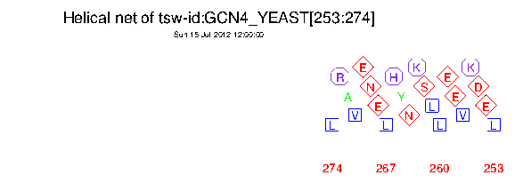

|
|
pepnet |
It is therefore easy to see patterns of amphipathicity that you may wish to investigate in more detail by using displays such as pepwheel.
You can specify which residues to mark up in squares, diamonds and octagons.
% pepnet -sask
Displays proteins as a helical net
Input sequence: tsw:gcn4_yeast
Begin at position [start]: 253
End at position [end]: 274
Graph type [x11]: cps
Created pepnet.ps
|
Go to the input files for this example
Go to the output files for this example
Standard (Mandatory) qualifiers:
[-sequence] sequence Sequence USA
-graph graph Graph type
Additional (Optional) qualifiers (* if not always prompted):
* -squares string By default the aliphatic residues ILVM are
marked with squares.
* -diamonds string By default the residues DENQST are marked
with diamonds.
* -octags string By default the positively charged residues
HKR are marked with octagons.
Advanced (Unprompted) qualifiers:
-amphipathic toggle If this is true then the residues ACFGILMVWY
are marked as squares and all other
residues are unmarked. This overrides any
other markup that you may have specified
using the qualifiers '-squares', '-diamonds'
and '-octags'.
Associated qualifiers:
"-sequence" associated qualifiers
-sbegin1 integer Start of the sequence to be used
-send1 integer End of the sequence to be used
-sreverse1 boolean Reverse (if DNA)
-sask1 boolean Ask for begin/end/reverse
-snucleotide1 boolean Sequence is nucleotide
-sprotein1 boolean Sequence is protein
-slower1 boolean Make lower case
-supper1 boolean Make upper case
-sformat1 string Input sequence format
-sdbname1 string Database name
-sid1 string Entryname
-ufo1 string UFO features
-fformat1 string Features format
-fopenfile1 string Features file name
"-graph" associated qualifiers
-gprompt boolean Graph prompting
-gtitle string Graph title
-gsubtitle string Graph subtitle
-gxtitle string Graph x axis title
-gytitle string Graph y axis title
-goutfile string Output file for non interactive displays
-gdirectory string Output directory
General qualifiers:
-auto boolean Turn off prompts
-stdout boolean Write standard output
-filter boolean Read standard input, write standard output
-options boolean Prompt for standard and additional values
-debug boolean Write debug output to program.dbg
-verbose boolean Report some/full command line options
-help boolean Report command line options. More
information on associated and general
qualifiers can be found with -help -verbose
-warning boolean Report warnings
-error boolean Report errors
-fatal boolean Report fatal errors
-die boolean Report deaths
|
| Standard (Mandatory) qualifiers | Allowed values | Default | |
|---|---|---|---|
| [-sequence] (Parameter 1) |
Sequence USA | Readable sequence | Required |
| -graph | Graph type | EMBOSS has a list of known devices, including postscript, ps, hpgl, hp7470, hp7580, meta, colourps, cps, xwindows, x11, tektronics, tekt, tek4107t, tek, none, null, text, data, xterm, png | EMBOSS_GRAPHICS value, or x11 |
| Additional (Optional) qualifiers | Allowed values | Default | |
| -squares | By default the aliphatic residues ILVM are marked with squares. | Any string is accepted | ILVM |
| -diamonds | By default the residues DENQST are marked with diamonds. | Any string is accepted | DENQST |
| -octags | By default the positively charged residues HKR are marked with octagons. | Any string is accepted | HKR |
| Advanced (Unprompted) qualifiers | Allowed values | Default | |
| -amphipathic | If this is true then the residues ACFGILMVWY are marked as squares and all other residues are unmarked. This overrides any other markup that you may have specified using the qualifiers '-squares', '-diamonds' and '-octags'. | Toggle value Yes/No | |
ID GCN4_YEAST STANDARD; PRT; 281 AA.
AC P03069; P03068;
DT 21-JUL-1986 (Rel. 01, Created)
DT 21-JUL-1986 (Rel. 01, Last sequence update)
DT 15-JUL-1999 (Rel. 38, Last annotation update)
DE GENERAL CONTROL PROTEIN GCN4 (AMINO ACID BIOSYNTHESIS REGULATORY
DE PROTEIN).
GN GCN4 OR ARG9 OR AAS3 OR YEL009C.
OS Saccharomyces cerevisiae (Baker's yeast).
OC Eukaryota; Fungi; Ascomycota; Hemiascomycetes; Saccharomycetales;
OC Saccharomycetaceae; Saccharomyces.
RN [1]
RP SEQUENCE FROM N.A.
RX MEDLINE; 85038531.
RA HINNEBUSCH A.G.;
RT "Evidence for translational regulation of the activator of general
RT amino acid control in yeast.";
RL Proc. Natl. Acad. Sci. U.S.A. 81:6442-6446(1984).
RN [2]
RP SEQUENCE FROM N.A.
RX MEDLINE; 84298088.
RA THIREOS G., PENN M.D., GREER H.;
RT "5' untranslated sequences are required for the translational control
RT of a yeast regulatory gene.";
RL Proc. Natl. Acad. Sci. U.S.A. 81:5096-5100(1984).
RN [3]
RP SEQUENCE FROM N.A.
RC STRAIN=S288C / AB972;
RA DIETRICH F.S., MULLIGAN J.T., HENNESSEY K.M., ALLEN E., ARAUJO R.,
RA AVILES E., BERNO A., BRENNAN T., CARPENTER J., CHEN E., CHERRY J.M.,
RA CHUNG E., DUNCAN M., GUZMAN E., HARTZELL G., HUNICKE-SMITH S.,
RA HYMAN R., KAYSER A., KOMP C., LASHKARI D., LEW H., LIN D.,
RA MOSEDALE D., NAKAHARA K., NAMATH A., NORGREN R., OEFNER P., OH C.,
RA PETEL F.X., ROBERTS D., SEHL P., SCHRAMM S., SHOGREN T., SMITH V.,
RA TAYLOR P., WEI Y., YELTON M., BOTSTEIN D., DAVIS R.W.;
RL Submitted (DEC-1994) to the EMBL/GenBank/DDBJ databases.
RN [4]
RP DOMAINS.
RX MEDLINE; 87002456.
RA HOPE I.A., STRUHL K.;
RT "Functional dissection of a eukaryotic transcriptional activator
RT protein, GCN4 of yeast.";
RL Cell 46:885-894(1986).
RN [5]
RP X-RAY CRYSTALLOGRAPHY (1.8 ANGSTROMS) OF 250-281.
RX MEDLINE; 92054531.
RA O'SHEA E.K., KLEMM J.D., KIM P.S., ALBER T.;
RT "X-ray structure of the GCN4 leucine zipper, a two-stranded, parallel
RT coiled coil.";
RL Science 254:539-544(1991).
[Part of this file has been deleted for brevity]
CC -!- SUBCELLULAR LOCATION: NUCLEAR.
CC -!- SIMILARITY: TO OTHER BZIP PROTEINS.
CC --------------------------------------------------------------------------
CC This SWISS-PROT entry is copyright. It is produced through a collaboration
CC between the Swiss Institute of Bioinformatics and the EMBL outstation -
CC the European Bioinformatics Institute. There are no restrictions on its
CC use by non-profit institutions as long as its content is in no way
CC modified and this statement is not removed. Usage by and for commercial
CC entities requires a license agreement (See http://www.isb-sib.ch/announce/
CC or send an email to license@isb-sib.ch).
CC --------------------------------------------------------------------------
DR EMBL; K02205; AAA34640.1; -.
DR EMBL; K02649; AAA65521.1; -.
DR EMBL; U18530; AAB64486.1; -.
DR PIR; A03604; RGBYA1.
DR PIR; A03605; RGBYA2.
DR PDB; 1ZTA; 15-APR-93.
DR PDB; 2ZTA; 15-OCT-92.
DR PDB; 1YSA; 31-OCT-93.
DR PDB; 1DGC; 22-JUN-94.
DR PDB; 2DGC; 08-MAR-96.
DR PDB; 1GCL; 03-JUN-95.
DR PDB; 1GCM; 29-JAN-96.
DR PDB; 1SWI; 08-NOV-96.
DR PDB; 1ZII; 07-JUL-97.
DR PDB; 1ZIJ; 07-JUL-97.
DR PDB; 1ZIK; 07-JUL-97.
DR PDB; 1ZIL; 07-JUL-97.
DR PDB; 1ZIM; 07-JUL-97.
DR PDB; 1PIQ; 30-SEP-98.
DR PDB; 1CE9; 25-MAR-99.
DR TRANSFAC; T00321; -.
DR SGD; L0000683; GCN4.
DR PFAM; PF00170; bZIP; 1.
DR PROSITE; PS00036; BZIP_BASIC; 1.
KW Amino-acid biosynthesis; Transcription regulation; Activator;
KW DNA-binding; Nuclear protein; 3D-structure.
FT DOMAIN 106 125 REQUIRED FOR TRANSCRIPTIONAL ACTIVATION.
FT DNA_BIND 231 249 BASIC MOTIF.
FT DOMAIN 253 274 LEUCINE-ZIPPER.
FT CONFLICT 239 281 ARRSRARKLQRMKQLEDKVEELLSKNYHLENEVARLKKLVG
FT ER -> PGVLVRESCKE (IN REF. 2).
FT HELIX 227 276
FT TURN 277 277
SQ SEQUENCE 281 AA; 31310 MW; A2155238 CRC32;
MSEYQPSLFA LNPMGFSPLD GSKSTNENVS ASTSTAKPMV GQLIFDKFIK TEEDPIIKQD
TPSNLDFDFA LPQTATAPDA KTVLPIPELD DAVVESFFSS STDSTPMFEY ENLEDNSKEW
TSLFDNDIPV TTDDVSLADK AIESTEEVSL VPSNLEVSTT SFLPTPVLED AKLTQTRKVK
KPNSVVKKSH HVGKDDESRL DHLGVVAYNR KQRSIPLSPI VPESSDPAAL KRARNTEAAR
RSRARKLQRM KQLEDKVEEL LSKNYHLENE VARLKKLVGE R
//
|

| Program name | Description |
|---|---|
| abiview | Reads ABI file and display the trace |
| cirdna | Draws circular maps of DNA constructs |
| garnier | Predicts protein secondary structure |
| helixturnhelix | Report nucleic acid binding motifs |
| hmoment | Hydrophobic moment calculation |
| lindna | Draws linear maps of DNA constructs |
| pepcoil | Predicts coiled coil regions |
| pepwheel | Shows protein sequences as helices |
| prettyplot | Displays aligned sequences, with colouring and boxing |
| prettyseq | Output sequence with translated ranges |
| remap | Display a sequence with restriction cut sites, translation etc |
| seealso | Finds programs sharing group names |
| showalign | Displays a multiple sequence alignment |
| showdb | Displays information on the currently available databases |
| showfeat | Show features of a sequence |
| showseq | Display a sequence with features, translation etc |
| sixpack | Display a DNA sequence with 6-frame translation and ORFs |
| textsearch | Search sequence documentation text. SRS and Entrez are faster! |
| tmap | Displays membrane spanning regions |